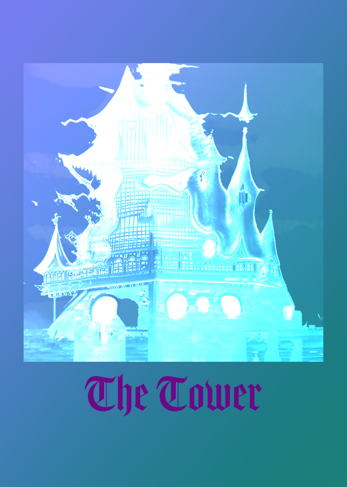
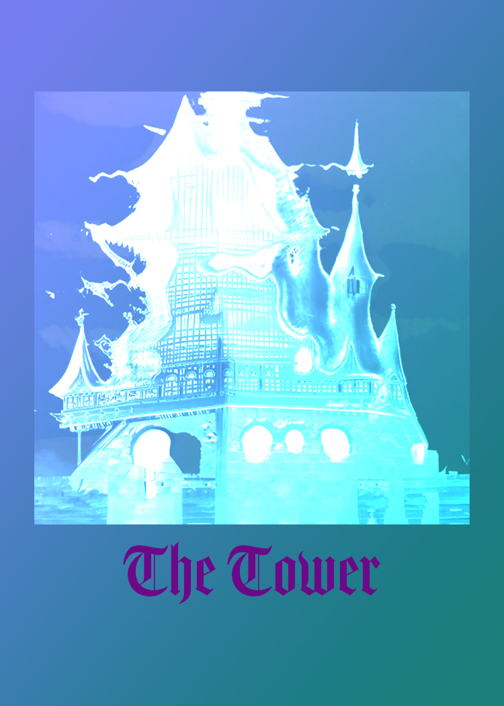
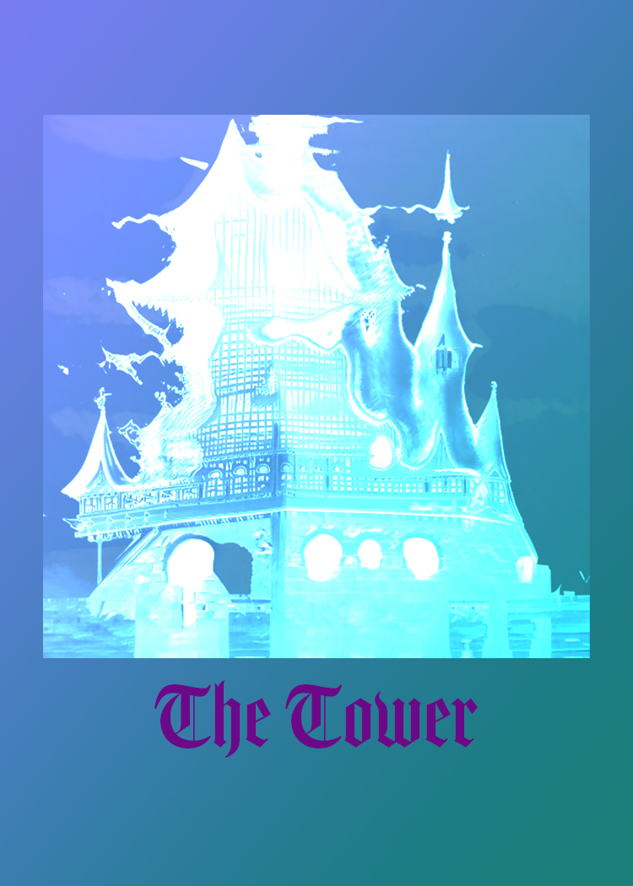
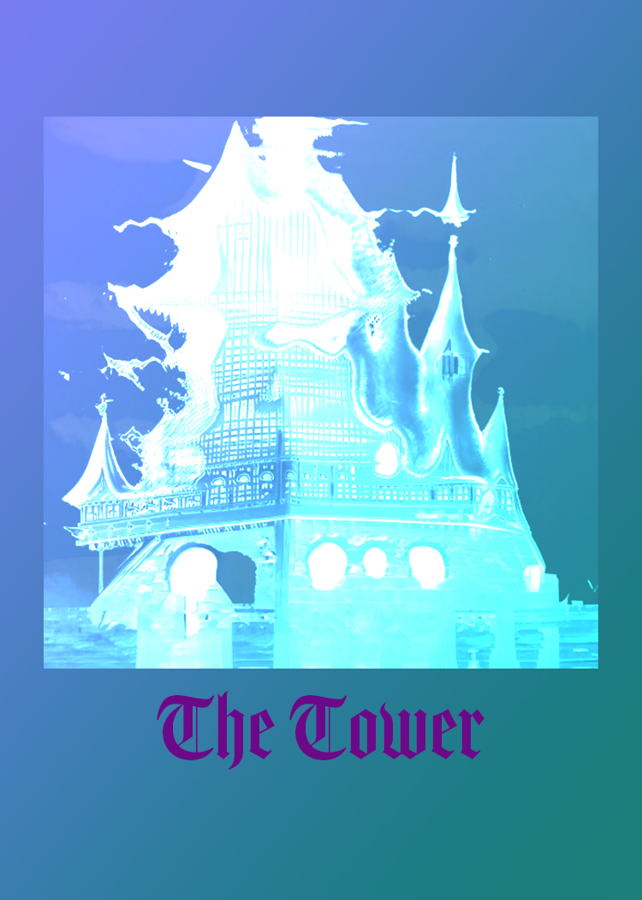

 

The Fool is a card of new beginnings, opportunity and potential. Just like the young man, you are at the outset of your journey, standing at the cliff‘s edge, and about to take your first step into the unknown. Even though you don’t know exactly where you are going, you are being called to commit yourself and follow your heart, no matter how crazy this leap of faith might seem to you. Now is a time when you need to trust where the Universe is taking you.
As a master manifestor, the Magician brings you the tools, resources and energy you need to make your dreams come true. Seriously, everything you need right now is at your fingertips. You have the spiritual (fire), physical (earth), mental (air) and emotional (water) resources to manifest your desires. And when you combine them with the energy of the spiritual and earthly realms, you will become a manifestation powerhouse! The key is to bring these tools together synergistically so that the impact of what you create is greater than the separate parts. This is alchemy at its best!
While the Magician is the guardian of the conscious mind and the tangible world, the High Priestess is the guardian of the subconscious mind and the teacher of sacred knowledge and hidden mysteries. Sitting at the threshold of the conscious and subconscious mind, the High Priestess has an innate ability to travel between these realms effortlessly. She teaches you that the world is not always as it seems and more profound influences are often at play. She ushers you through the thin veil of awareness, offering you a deep, intuitive understanding of the Universe and a heightened awareness of secret or hidden information.
The Empress signifies a strong connection with our femininity. Femininity translates in many ways – elegance, sensuality, fertility, creative expression, nurturing – and is necessary for creating balance in both men and women. The Empress calls on you to connect with your feminine energy. Create beauty in your life. Connect with your senses through taste, touch, sound, smell and sight. Draw on these senses to experience pleasure and deep fulfilment. Treat yourself to a day spa, learn massage, enjoy a fine restaurant or spend more time with your partner. Discover different approaches to expressing yourself creatively, be it through painting, music, drama or other art forms. This may be the perfect chance to take up a new hobby that enables you to access this part of yourself.
As the father figure of the Tarot deck, the Emperor suggests that you are adopting this fatherly role (regardless of whether you are male or female), providing for your family, and protecting and defending your loved ones. You may be the breadwinner or the ‘rock’ for those who rely on your stability and security.
In its purest form, the Lovers card represents conscious connections and meaningful relationships. The arrival of this card in a Tarot reading shows that you have a beautiful, soul-honouring connection with a loved one. You may believe you have found your soul mate or life partner, and the sexual energy between you both goes way beyond instant gratification and lust to something that is very spiritual and almost Tantric. While the Lovers card typically refers to a romantic tie, it can also represent a close friendship or family relationship where love, respect and compassion flow.
The Strength card represents strength, determination, and power – like the Chariot. However, while the Chariot signifies outer strength and will, the Strength card speaks to the inner strength and the human spirit's ability to overcome any obstacle. Strength is about knowing you can endure life’s obstacles. You have great stamina and persistence, balanced with underlying patience and inner calm. You are committed to what you need to do, and you go about it in a way that shows your composure and maturity.
When the Tower card appears in a Tarot reading, expect the unexpected – massive change, upheaval, destruction and chaos. It may be a divorce, death of a loved one, financial failure, health problems, natural disaster, job loss or any event that shakes you to your core, affecting you spiritually, mentally and physically. There’s no escaping it. Change is here to tear things up, create chaos and destroy everything in its path (but trust me, it’s for your Highest Good).
When the World card appears in a Tarot reading, you are glowing with a sense of wholeness, achievement, fulfilment and completion. A long-term project, period of study, relationship or career has come full circle, and you are now revelling in the sense of closure and accomplishment. This card could represent graduation, a marriage, the birth of a child or achieving a long-held dream or aspiration. You have finally accomplished your goal or purpose. Everything has come together, and you are in the right place, doing the right thing, achieving what you have envisioned. You feel whole and complete.
The Sun represents success, radiance and abundance. The Sun gives you strength and tells you that no matter where you go or what you do, your positive and radiant energy will follow you and bring you happiness and joy. People are drawn to you because you can always see the bright side and bring such warmth into other people’s lives. This beautiful, warm energy is what will get you through the tough times and help you succeed. You are also in a position where you can share your highest qualities and achievements with others. Radiate who you are and what you stand for; shine your love on those you care about.
The Moon represents your fears and illusions and often comes out when you are projecting fear into your present and your future, based on your past experiences. You may have a painful memory that caused emotional distress, and rather than dealing with the emotions you pushed them down deep into your subconscious. Now, these emotions are making a reappearance, and you may find yourself under their influence on a conscious or subconscious level. For example, if you had a car accident when you were young but didn’t deal with the emotions, you may get sad or anxious every time you get into the backseat of a car. To remedy this, connect with your subconscious mind and release any fears or anxieties holding you back. Hypnosis, therapy and shamanic healing can support this process.
Are we, in fact, digital beings living in a vast computer simulation created by our own future descendants or future post human civilization? Recently, a number of philosophers, futurists, science-fiction writers, and technologists — people who share a strong faith in technological progress, have come to believe that the simulation argument is not just plausible, but inevitable.
They argue that if consciousness can be simulated in a computer and the advanced civilizations are bound to have access to truly stupendous amounts of computing power, then, the notion that the present physical world itself is virtual is quite reasonable.
While never commonly held, the idea that the world is a virtual reality has a long pedigree. Perhaps the oldest human story is that the world and whatever we see and know is the product of a creator. Ancients firmly believed in an eternal, all-powerful, and all- knowing God. So there’s a kind of religious element to the notion of a giant simulation, a sense that there is a higher, purer reality, if we could only but grasp it.